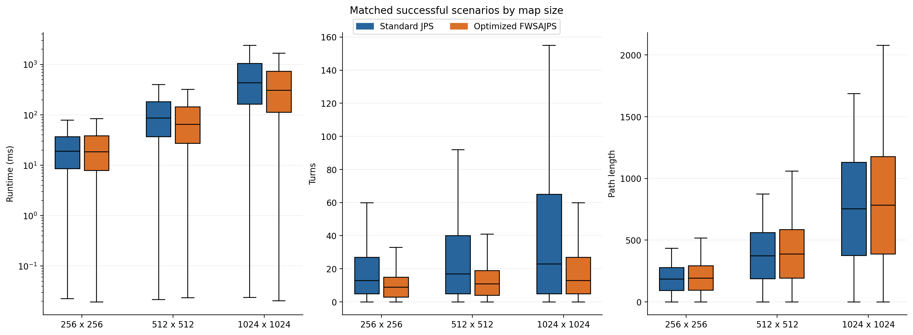
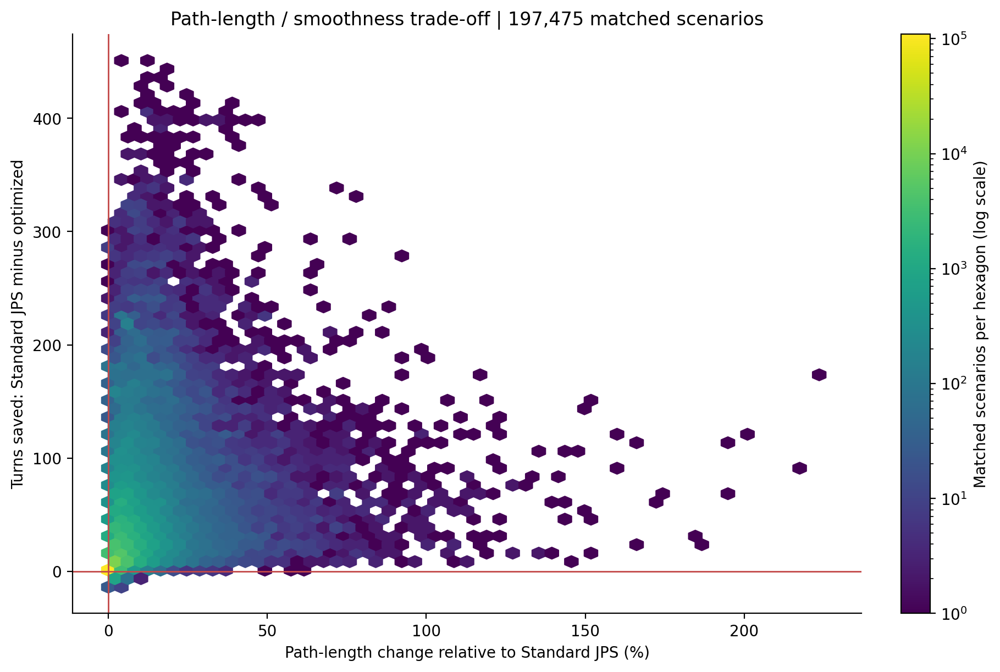
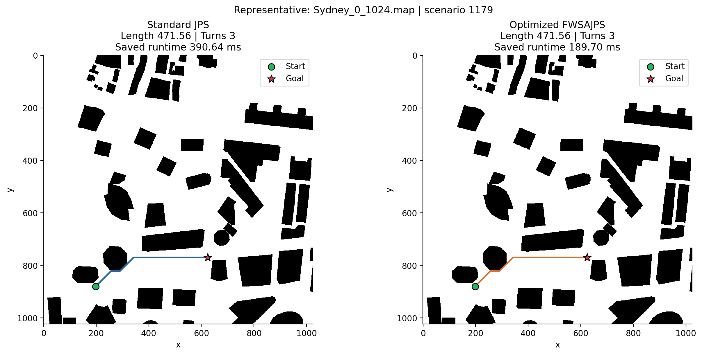
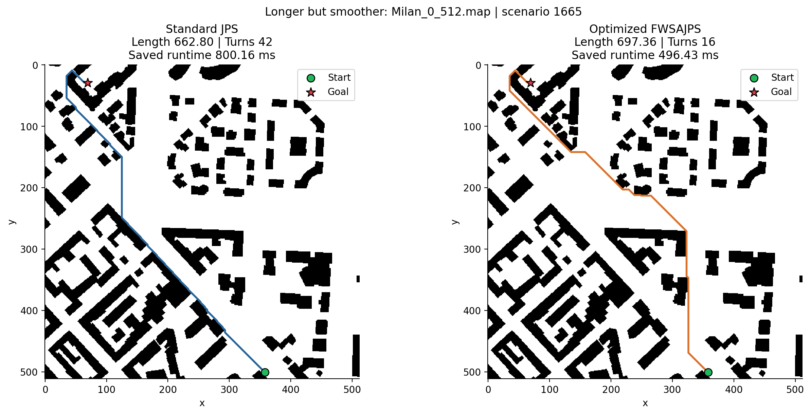
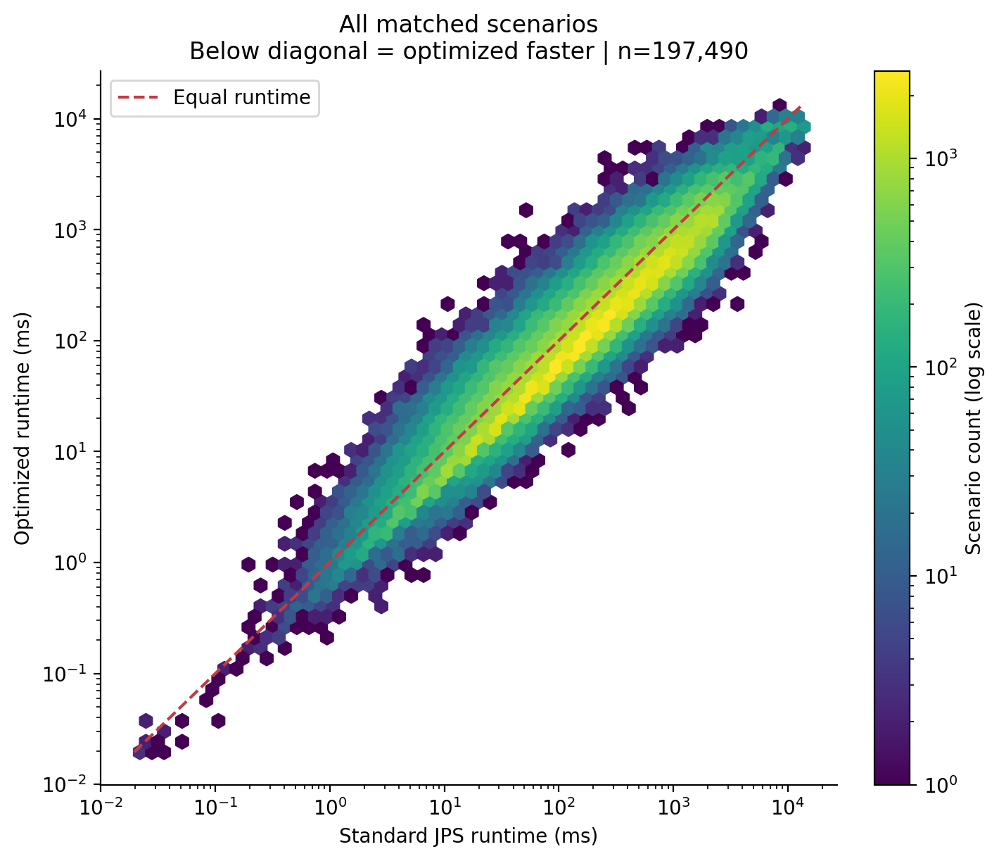
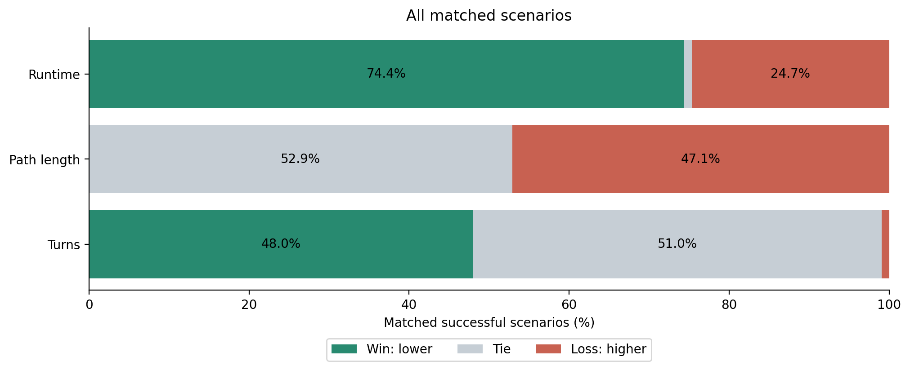
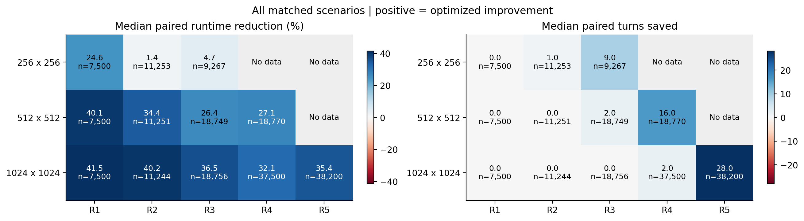
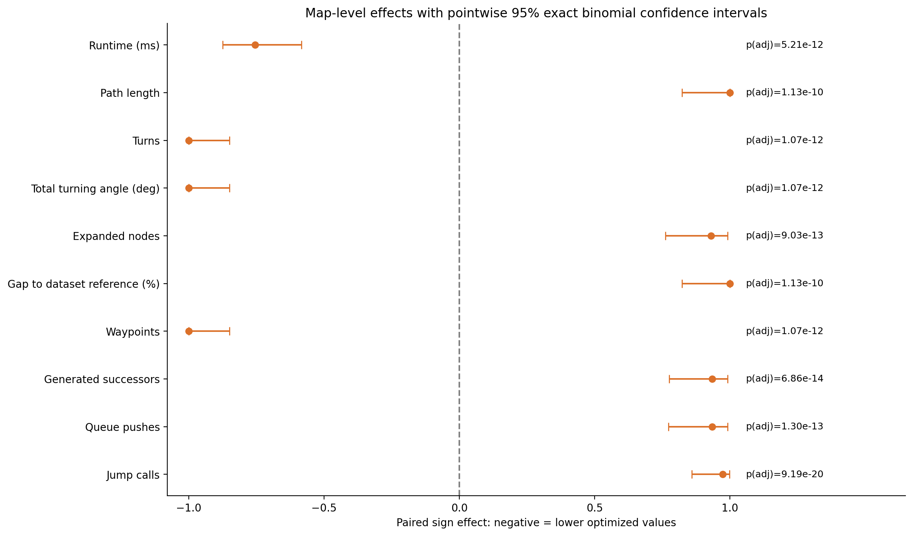

Snapshot: 2026-10-14T09:51:30.337976+03:00
197,490 included matched scenarios; 197,490 successful for both.
Source: Z:\Study\Codex\JPS_updated_miet_conf\results_new_ablation\street\street_all\cache\benchmark_f29e734530e46b1d_street_checkpoint.sqlite3
Invalid pair metadata excluded: 0.
| Algorithm | Saved runs | Successful saved runs | Saved success rate (%) |
|---|---|---|---|
| Standard JPS | 197490 | 197490 | 100.0 |
| Optimized Fast Weighted SA-JPS | 197490 | 197490 | 100.0 |
| Grouping | Group | Matched scenarios | Maps represented | Both successful | Standard JPS successes | Standard JPS success rate (%) | Optimized FWSAJPS successes | Optimized FWSAJPS success rate (%) |
|---|---|---|---|---|---|---|---|---|
| Overall | All | 197490 | 90 | 197490 | 197490 | 100.0 | 197490 | 100.0 |
| Map size | 256 x 256 | 28020 | 30 | 28020 | 28020 | 100.0 | 28020 | 100.0 |
| Map size | 512 x 512 | 56270 | 30 | 56270 | 56270 | 100.0 | 56270 | 100.0 |
| Map size | 1024 x 1024 | 113200 | 30 | 113200 | 113200 | 100.0 | 113200 | 100.0 |
| Reference length | R1: 0 <= L < 100 | 22500 | 90 | 22500 | 22500 | 100.0 | 22500 | 100.0 |
| Reference length | R2: 100 <= L < 250 | 33748 | 90 | 33748 | 33748 | 100.0 | 33748 | 100.0 |
| Reference length | R3: 250 <= L < 500 | 46772 | 90 | 46772 | 46772 | 100.0 | 46772 | 100.0 |
| Reference length | R4: 500 <= L < 1000 | 56270 | 60 | 56270 | 56270 | 100.0 | 56270 | 100.0 |
| Reference length | R5: L >= 1000 | 38200 | 30 | 38200 | 38200 | 100.0 | 38200 | 100.0 |
| Algorithm | Group | Metric | N | Optimized Fast Weighted SA-JPS | Standard JPS |
|---|---|---|---|---|---|
| All | Expanded nodes | 197490 | 86.00 [21.00, 323.00] | 84.00 [19.00, 286.00] | |
| All | Gap to dataset reference (%) | 197475 | 0.00 [0.00, 4.29] | -0.08 [-0.23, 0.00] | |
| All | Path length | 197490 | 488.96 [225.60, 888.25] | 470.86 [218.88, 851.11] | |
| All | Runtime (ms) | 197490 | 128.89 [38.17, 424.78] | 175.18 [48.78, 586.51] | |
| All | Total turning angle (deg) | 197490 | 495.00 [225.00, 1,035.00] | 855.00 [225.00, 2,205.00] | |
| All | Turns | 197490 | 11.00 [5.00, 23.00] | 19.00 [5.00, 49.00] |
| Algorithm | Group | Metric | N | Optimized Fast Weighted SA-JPS | Standard JPS |
|---|---|---|---|---|---|
| 1024 x 1024 | Expanded nodes | 113200 | 91.00 [22.00, 359.00] | 106.00 [22.00, 370.00] | |
| 1024 x 1024 | Gap to dataset reference (%) | 113193 | 0.00 [0.00, 4.19] | -0.06 [-0.15, 0.00] | |
| 1024 x 1024 | Path length | 113200 | 783.71 [387.52, 1,178.56] | 753.95 [377.08, 1,130.80] | |
| 1024 x 1024 | Runtime (ms) | 113200 | 308.34 [112.53, 740.34] | 436.35 [165.09, 1,059.44] | |
| 1024 x 1024 | Total turning angle (deg) | 113200 | 585.00 [225.00, 1,215.00] | 1,035.00 [225.00, 2,925.00] | |
| 1024 x 1024 | Turns | 113200 | 13.00 [5.00, 27.00] | 23.00 [5.00, 65.00] | |
| 256 x 256 | Expanded nodes | 28020 | 77.00 [19.00, 267.00] | 51.00 [15.00, 151.00] | |
| 256 x 256 | Gap to dataset reference (%) | 28013 | 0.00 [-0.18, 4.40] | -0.32 [-0.71, 0.00] | |
| 256 x 256 | Path length | 28020 | 193.68 [95.25, 292.76] | 185.97 [92.92, 278.82] | |
| 256 x 256 | Runtime (ms) | 28020 | 18.57 [7.90, 38.52] | 19.09 [8.59, 36.97] | |
| 256 x 256 | Total turning angle (deg) | 28020 | 405.00 [135.00, 675.00] | 585.00 [225.00, 1,215.00] | |
| 256 x 256 | Turns | 28020 | 9.00 [3.00, 15.00] | 13.00 [5.00, 27.00] | |
| 512 x 512 | Expanded nodes | 56270 | 80.00 [20.00, 293.00] | 72.00 [18.00, 230.00] | |
| 512 x 512 | Gap to dataset reference (%) | 56269 | 0.00 [0.00, 4.45] | -0.13 [-0.31, 0.00] | |
| 512 x 512 | Path length | 56270 | 389.27 [192.28, 586.50] | 374.53 [187.17, 561.58] | |
| 512 x 512 | Runtime (ms) | 56270 | 65.60 [27.35, 144.83] | 86.58 [37.16, 182.31] | |
| 512 x 512 | Total turning angle (deg) | 56270 | 495.00 [180.00, 855.00] | 765.00 [225.00, 1,845.00] | |
| 512 x 512 | Turns | 56270 | 11.00 [4.00, 19.00] | 17.00 [5.00, 40.00] |
| Algorithm | Group | Metric | N | Optimized Fast Weighted SA-JPS | Standard JPS |
|---|---|---|---|---|---|
| R1: 0 <= L < 100 | Expanded nodes | 22500 | 5.00 [3.00, 9.00] | 4.00 [3.00, 8.00] | |
| R1: 0 <= L < 100 | Gap to dataset reference (%) | 22485 | 0.00 [0.00, 0.00] | 0.00 [0.00, 0.00] | |
| R1: 0 <= L < 100 | Path length | 22500 | 50.14 [24.97, 75.57] | 49.94 [24.97, 74.95] | |
| R1: 0 <= L < 100 | Runtime (ms) | 22500 | 10.14 [4.70, 23.74] | 14.38 [6.02, 37.39] | |
| R1: 0 <= L < 100 | Total turning angle (deg) | 22500 | 45.00 [45.00, 135.00] | 45.00 [45.00, 135.00] | |
| R1: 0 <= L < 100 | Turns | 22500 | 1.00 [1.00, 3.00] | 1.00 [1.00, 3.00] | |
| R2: 100 <= L < 250 | Expanded nodes | 33748 | 24.00 [9.00, 74.00] | 20.00 [9.00, 47.00] | |
| R2: 100 <= L < 250 | Gap to dataset reference (%) | 33748 | 0.00 [-0.24, 0.09] | 0.00 [-0.39, 0.00] | |
| R2: 100 <= L < 250 | Path length | 33748 | 179.05 [139.76, 218.20] | 174.47 [137.20, 211.95] | |
| R2: 100 <= L < 250 | Runtime (ms) | 33748 | 28.60 [16.03, 53.83] | 34.01 [18.17, 70.87] | |
| R2: 100 <= L < 250 | Total turning angle (deg) | 33748 | 225.00 [45.00, 495.00] | 315.00 [45.00, 675.00] | |
| R2: 100 <= L < 250 | Turns | 33748 | 5.00 [1.00, 10.00] | 7.00 [1.00, 15.00] | |
| R3: 250 <= L < 500 | Expanded nodes | 46772 | 74.00 [25.00, 230.00] | 66.00 [26.00, 155.00] | |
| R3: 250 <= L < 500 | Gap to dataset reference (%) | 46772 | 0.00 [-0.12, 4.54] | -0.14 [-0.32, 0.00] | |
| R3: 250 <= L < 500 | Path length | 46772 | 367.07 [311.30, 437.21] | 353.47 [301.14, 421.95] | |
| R3: 250 <= L < 500 | Runtime (ms) | 46772 | 78.08 [44.90, 139.02] | 97.00 [54.56, 173.67] | |
| R3: 250 <= L < 500 | Total turning angle (deg) | 46772 | 405.00 [225.00, 855.00] | 765.00 [315.00, 1,575.00] | |
| R3: 250 <= L < 500 | Turns | 46772 | 9.00 [5.00, 19.00] | 17.00 [7.00, 35.00] | |
| R4: 500 <= L < 1000 | Expanded nodes | 56270 | 159.00 [55.00, 453.00] | 162.00 [68.00, 355.00] | |
| R4: 500 <= L < 1000 | Gap to dataset reference (%) | 56270 | 1.02 [0.00, 5.73] | -0.09 [-0.21, 0.00] | |
| R4: 500 <= L < 1000 | Path length | 56270 | 715.18 [615.23, 850.37] | 686.22 [592.75, 814.85] | |
| R4: 500 <= L < 1000 | Runtime (ms) | 56270 | 262.57 [151.00, 470.45] | 353.92 [209.98, 600.85] | |
| R4: 500 <= L < 1000 | Total turning angle (deg) | 56270 | 675.00 [405.00, 1,260.00] | 1,485.00 [585.00, 2,835.00] | |
| R4: 500 <= L < 1000 | Turns | 56270 | 15.00 [9.00, 28.00] | 33.00 [13.00, 63.00] | |
| R5: L >= 1000 | Expanded nodes | 38200 | 390.00 [141.00, 1,058.00] | 472.00 [219.00, 964.00] | |
| R5: L >= 1000 | Gap to dataset reference (%) | 38200 | 2.21 [0.00, 6.11] | -0.10 [-0.16, -0.05] | |
| R5: L >= 1000 | Path length | 38200 | 1,305.10 [1,170.17, 1,438.97] | 1,253.32 [1,126.26, 1,380.46] | |
| R5: L >= 1000 | Runtime (ms) | 38200 | 929.30 [535.27, 1,635.92] | 1,397.43 [871.92, 2,223.05] | |
| R5: L >= 1000 | Total turning angle (deg) | 38200 | 1,215.00 [675.00, 1,980.00] | 2,835.00 [1,305.00, 5,175.00] | |
| R5: L >= 1000 | Turns | 38200 | 27.00 [15.00, 44.00] | 63.00 [29.00, 115.00] |
Negative values mean a reduction. The two percentage measures below are different calculations.
| Grouping | Group | Metric | Metric pairs | Positive baseline pairs | Zero or negative baseline pairs excluded | Difference between medians (%) | Per-scenario change median (%) | Per-scenario change Q1 (%) | Per-scenario change Q3 (%) |
|---|---|---|---|---|---|---|---|---|---|
| Overall | All | Runtime (ms) | 197490 | 197490 | 0 | -26.42 | -32.48 | -44.52 | 0.38 |
| Overall | All | Path length | 197490 | 197475 | 15 | 3.85 | 0.00 | 0.00 | 4.53 |
| Overall | All | Turns | 197490 | 196100 | 1390 | -42.11 | 0.00 | -55.00 | 0.00 |
| Overall | All | Total turning angle (deg) | 197490 | 196100 | 1390 | -42.11 | 0.00 | -54.95 | 0.00 |
| Overall | All | Expanded nodes | 197490 | 197490 | 0 | 2.38 | 1.00 | -16.67 | 54.55 |
| Map size | 256 x 256 | Runtime (ms) | 28020 | 28020 | 0 | -2.73 | -9.45 | -34.51 | 37.88 |
| Map size | 256 x 256 | Path length | 28020 | 28013 | 7 | 4.15 | 0.00 | 0.00 | 5.02 |
| Map size | 256 x 256 | Turns | 28020 | 27636 | 384 | -30.77 | 0.00 | -44.44 | 0.00 |
| Map size | 256 x 256 | Total turning angle (deg) | 28020 | 27636 | 384 | -30.77 | 0.00 | -44.44 | 0.00 |
| Map size | 256 x 256 | Expanded nodes | 28020 | 28020 | 0 | 50.98 | 39.71 | 0.00 | 116.67 |
| Map size | 512 x 512 | Runtime (ms) | 56270 | 56270 | 0 | -24.23 | -31.13 | -43.45 | 2.50 |
| Map size | 512 x 512 | Path length | 56270 | 56269 | 1 | 3.93 | 0.00 | 0.00 | 4.72 |
| Map size | 512 x 512 | Turns | 56270 | 55805 | 465 | -35.29 | 0.00 | -52.63 | 0.00 |
| Map size | 512 x 512 | Total turning angle (deg) | 56270 | 55805 | 465 | -35.29 | 0.00 | -52.63 | 0.00 |
| Map size | 512 x 512 | Expanded nodes | 56270 | 56270 | 0 | 11.11 | 9.09 | -10.00 | 61.82 |
| Map size | 1024 x 1024 | Runtime (ms) | 113200 | 113200 | 0 | -29.34 | -36.58 | -46.86 | -10.42 |
| Map size | 1024 x 1024 | Path length | 113200 | 113193 | 7 | 3.95 | 0.00 | 0.00 | 4.32 |
| Map size | 1024 x 1024 | Turns | 113200 | 112659 | 541 | -43.48 | 0.00 | -59.81 | 0.00 |
| Map size | 1024 x 1024 | Total turning angle (deg) | 113200 | 112659 | 541 | -43.48 | 0.00 | -59.77 | 0.00 |
| Map size | 1024 x 1024 | Expanded nodes | 113200 | 113200 | 0 | -14.15 | 0.00 | -26.18 | 34.34 |
| Reference length | R1: 0 <= L < 100 | Runtime (ms) | 22500 | 22500 | 0 | -29.47 | -37.91 | -43.08 | -16.92 |
| Reference length | R1: 0 <= L < 100 | Path length | 22500 | 22485 | 15 | 0.40 | 0.00 | 0.00 | 0.00 |
| Reference length | R1: 0 <= L < 100 | Turns | 22500 | 21225 | 1275 | 0.00 | 0.00 | 0.00 | 0.00 |
| Reference length | R1: 0 <= L < 100 | Total turning angle (deg) | 22500 | 21225 | 1275 | 0.00 | 0.00 | 0.00 | 0.00 |
| Reference length | R1: 0 <= L < 100 | Expanded nodes | 22500 | 22500 | 0 | 25.00 | 0.00 | 0.00 | 33.33 |
| Reference length | R2: 100 <= L < 250 | Runtime (ms) | 33748 | 33748 | 0 | -15.90 | -31.00 | -42.33 | 8.41 |
| Reference length | R2: 100 <= L < 250 | Path length | 33748 | 33748 | 0 | 2.62 | 0.00 | 0.00 | 0.59 |
| Reference length | R2: 100 <= L < 250 | Turns | 33748 | 33659 | 89 | -28.57 | 0.00 | -22.22 | 0.00 |
| Reference length | R2: 100 <= L < 250 | Total turning angle (deg) | 33748 | 33659 | 89 | -28.57 | 0.00 | -22.22 | 0.00 |
| Reference length | R2: 100 <= L < 250 | Expanded nodes | 33748 | 33748 | 0 | 20.00 | 9.09 | 0.00 | 65.52 |
| Reference length | R3: 250 <= L < 500 | Runtime (ms) | 46772 | 46772 | 0 | -19.50 | -27.93 | -43.14 | 10.02 |
| Reference length | R3: 250 <= L < 500 | Path length | 46772 | 46772 | 0 | 3.85 | 0.00 | 0.00 | 4.89 |
| Reference length | R3: 250 <= L < 500 | Turns | 46772 | 46755 | 17 | -47.06 | 0.00 | -51.85 | 0.00 |
| Reference length | R3: 250 <= L < 500 | Total turning angle (deg) | 46772 | 46755 | 17 | -47.06 | 0.00 | -51.85 | 0.00 |
| Reference length | R3: 250 <= L < 500 | Expanded nodes | 46772 | 46772 | 0 | 12.12 | 12.00 | -10.00 | 74.16 |
| Reference length | R4: 500 <= L < 1000 | Runtime (ms) | 56270 | 56270 | 0 | -25.81 | -30.44 | -46.14 | 1.88 |
| Reference length | R4: 500 <= L < 1000 | Path length | 56270 | 56270 | 0 | 4.22 | 1.19 | 0.00 | 5.91 |
| Reference length | R4: 500 <= L < 1000 | Turns | 56270 | 56261 | 9 | -54.55 | -29.27 | -63.77 | 0.00 |
| Reference length | R4: 500 <= L < 1000 | Total turning angle (deg) | 56270 | 56261 | 9 | -54.55 | -29.27 | -63.77 | 0.00 |
| Reference length | R4: 500 <= L < 1000 | Expanded nodes | 56270 | 56270 | 0 | -1.85 | 3.70 | -28.30 | 58.82 |
| Reference length | R5: L >= 1000 | Runtime (ms) | 38200 | 38200 | 0 | -33.50 | -35.40 | -49.45 | -9.54 |
| Reference length | R5: L >= 1000 | Path length | 38200 | 38200 | 0 | 4.13 | 2.35 | 0.00 | 6.25 |
| Reference length | R5: L >= 1000 | Turns | 38200 | 38200 | 0 | -57.14 | -44.55 | -69.33 | 0.00 |
| Reference length | R5: L >= 1000 | Total turning angle (deg) | 38200 | 38200 | 0 | -57.14 | -44.56 | -69.31 | 0.00 |
| Reference length | R5: L >= 1000 | Expanded nodes | 38200 | 38200 | 0 | -17.37 | -10.96 | -43.79 | 35.73 |
Primary analysis: each map contributes its median of scenario-paired differences (optimized minus Standard JPS). An exact two-sided sign test checks whether positive and negative nonzero map differences are equally likely. It does not test equality of pooled scenario medians. Maps are equally weighted.
Primary effect size: paired sign effect = (positive - negative) / nonzero units. Rank-biserial effect is also provided: (positive rank sum - negative rank sum) / total rank sum, using average ranks of absolute nonzero differences. Both range from -1 to +1; negative means lower optimized values. For reference gap, lower does not necessarily mean better. Zero differences are excluded from these denominators; tie counts are reported. All-zero differences yield effect 0 and p=1 by convention.
Holm adjustment covers all metrics and groups separately for each analysis unit; use adjusted p-values for significance at 0.05. Statistical significance is not practical importance. Primary inference assumes independent maps; related city variants or resolutions may violate that assumption. Scenario-level Wilcoxon results are exploratory because scenarios within a map are dependent and signed-rank inference assumes symmetric differences. Small-sample normal approximations are flagged.
Only jointly successful scenarios with finite values are used. Differences are rounded to 9 decimal places before ranking to suppress floating-point artifacts. Fewer than two nonzero units receive no inferential p-value. CSV values of zero p may reflect numerical underflow; HTML displays these as below machine precision.
| Metric | N units | Nonzero units | Median paired difference | Paired sign effect | Rank-biserial effect | p-value | Holm-adjusted p-value | Significant (Holm < 0.05) | Status |
|---|---|---|---|---|---|---|---|---|---|
| Runtime (ms) | 90 | 90 | -13.03 | -0.7556 | -0.9302 | 7.774e-14 | 5.208e-12 | Yes | OK |
| Path length | 90 | 40 | 0 | 1 | 1 | 1.819e-12 | 1.128e-10 | Yes | OK |
| Turns | 90 | 47 | -2 | -1 | -1 | 1.421e-14 | 1.066e-12 | Yes | OK |
| Total turning angle (deg) | 90 | 47 | -90 | -1 | -1 | 1.421e-14 | 1.066e-12 | Yes | OK |
| Expanded nodes | 90 | 58 | 2.5 | 0.931 | 0.9696 | 1.188e-14 | 9.028e-13 | Yes | OK |
| Gap to dataset reference (%) | 90 | 40 | 0 | 1 | 1 | 1.819e-12 | 1.128e-10 | Yes | OK |
| Waypoints | 90 | 47 | -2 | -1 | -1 | 1.421e-14 | 1.066e-12 | Yes | OK |
| Generated successors | 90 | 62 | 4 | 0.9355 | 0.9749 | 8.474e-16 | 6.864e-14 | Yes | OK |
| Queue pushes | 90 | 61 | 4 | 0.9344 | 0.9773 | 1.641e-15 | 1.296e-13 | Yes | OK |
| Jump calls | 90 | 77 | 3718 | 0.974 | 0.9667 | 1.032e-21 | 9.188e-20 | Yes | OK |
| Grouping | Group | Metric | Unit | Matched metric scenarios | Maps | N units | Nonzero units | Tied units | Optimized lower units | Optimized higher units | Median paired difference | Paired sign effect | Rank-biserial effect | p-value | Test | Status | Holm-adjusted p-value | Significant (Holm < 0.05) |
|---|---|---|---|---|---|---|---|---|---|---|---|---|---|---|---|---|---|---|
| Overall | All | Runtime (ms) | Map median difference (primary) | 197490 | 90 | 90 | 90 | 0 | 79 | 11 | -13.03 | -0.7556 | -0.9302 | 7.774e-14 | Exact two-sided sign test | OK | 5.208e-12 | Yes |
| Overall | All | Runtime (ms) | Scenario difference (exploratory) | 197490 | 90 | 197490 | 197490 | 0 | 147795 | 49695 | -28.57 | -0.4967 | -0.5518 | < machine precision | Two-sided Wilcoxon (normal approximation) | OK | < machine precision | Yes |
| Overall | All | Path length | Map median difference (primary) | 197490 | 90 | 90 | 40 | 50 | 0 | 40 | 0 | 1 | 1 | 1.819e-12 | Exact two-sided sign test | OK | 1.128e-10 | Yes |
| Overall | All | Path length | Scenario difference (exploratory) | 197490 | 90 | 197490 | 93003 | 104487 | 0 | 93003 | 0 | 1 | 1 | < machine precision | Two-sided Wilcoxon (normal approximation) | OK | < machine precision | Yes |
| Overall | All | Turns | Map median difference (primary) | 197490 | 90 | 90 | 47 | 43 | 47 | 0 | -2 | -1 | -1 | 1.421e-14 | Exact two-sided sign test | OK | 1.066e-12 | Yes |
| Overall | All | Turns | Scenario difference (exploratory) | 197490 | 90 | 197490 | 96754 | 100736 | 94838 | 1916 | 0 | -0.9604 | -0.993 | < machine precision | Two-sided Wilcoxon (normal approximation) | OK | < machine precision | Yes |
| Overall | All | Total turning angle (deg) | Map median difference (primary) | 197490 | 90 | 90 | 47 | 43 | 47 | 0 | -90 | -1 | -1 | 1.421e-14 | Exact two-sided sign test | OK | 1.066e-12 | Yes |
| Overall | All | Total turning angle (deg) | Scenario difference (exploratory) | 197490 | 90 | 197490 | 96675 | 100815 | 94763 | 1912 | 0 | -0.9604 | -0.9931 | < machine precision | Two-sided Wilcoxon (normal approximation) | OK | < machine precision | Yes |
| Overall | All | Expanded nodes | Map median difference (primary) | 197490 | 90 | 90 | 58 | 32 | 2 | 56 | 2.5 | 0.931 | 0.9696 | 1.188e-14 | Exact two-sided sign test | OK | 9.028e-13 | Yes |
| Overall | All | Expanded nodes | Scenario difference (exploratory) | 197490 | 90 | 197490 | 168341 | 29149 | 69107 | 99234 | 1 | 0.179 | 0.1923 | < machine precision | Two-sided Wilcoxon (normal approximation) | OK | < machine precision | Yes |
| Overall | All | Gap to dataset reference (%) | Map median difference (primary) | 197475 | 90 | 90 | 40 | 50 | 0 | 40 | 0 | 1 | 1 | 1.819e-12 | Exact two-sided sign test | OK | 1.128e-10 | Yes |
| Overall | All | Gap to dataset reference (%) | Scenario difference (exploratory) | 197475 | 90 | 197475 | 93003 | 104472 | 0 | 93003 | 0 | 1 | 1 | < machine precision | Two-sided Wilcoxon (normal approximation) | OK | < machine precision | Yes |
| Overall | All | Waypoints | Map median difference (primary) | 197490 | 90 | 90 | 47 | 43 | 47 | 0 | -2 | -1 | -1 | 1.421e-14 | Exact two-sided sign test | OK | 1.066e-12 | Yes |
| Overall | All | Waypoints | Scenario difference (exploratory) | 197490 | 90 | 197490 | 96754 | 100736 | 94838 | 1916 | 0 | -0.9604 | -0.993 | < machine precision | Two-sided Wilcoxon (normal approximation) | OK | < machine precision | Yes |
| Overall | All | Generated successors | Map median difference (primary) | 197490 | 90 | 90 | 62 | 28 | 2 | 60 | 4 | 0.9355 | 0.9749 | 8.474e-16 | Exact two-sided sign test | OK | 6.864e-14 | Yes |
| Overall | All | Generated successors | Scenario difference (exploratory) | 197490 | 90 | 197490 | 168628 | 28862 | 66435 | 102193 | 1 | 0.2121 | 0.2335 | < machine precision | Two-sided Wilcoxon (normal approximation) | OK | < machine precision | Yes |
| Overall | All | Queue pushes | Map median difference (primary) | 197490 | 90 | 90 | 61 | 29 | 2 | 59 | 4 | 0.9344 | 0.9773 | 1.641e-15 | Exact two-sided sign test | OK | 1.296e-13 | Yes |
| Overall | All | Queue pushes | Scenario difference (exploratory) | 197490 | 90 | 197490 | 168608 | 28882 | 66654 | 101954 | 1 | 0.2094 | 0.2295 | < machine precision | Two-sided Wilcoxon (normal approximation) | OK | < machine precision | Yes |
| Overall | All | Jump calls | Map median difference (primary) | 197490 | 90 | 90 | 77 | 13 | 1 | 76 | 3718 | 0.974 | 0.9667 | 1.032e-21 | Exact two-sided sign test | OK | 9.188e-20 | Yes |
| Overall | All | Jump calls | Scenario difference (exploratory) | 197490 | 90 | 197490 | 169664 | 27826 | 49801 | 119863 | 2970 | 0.4129 | 0.4696 | < machine precision | Two-sided Wilcoxon (normal approximation) | OK | < machine precision | Yes |
| Map size | 256 x 256 | Runtime (ms) | Map median difference (primary) | 28020 | 30 | 30 | 30 | 0 | 19 | 11 | -0.579 | -0.2667 | -0.4022 | 2.005e-01 | Exact two-sided sign test | OK | 1.000e+00 | No |
| Map size | 256 x 256 | Runtime (ms) | Scenario difference (exploratory) | 28020 | 30 | 28020 | 28020 | 0 | 15829 | 12191 | -0.801 | -0.1298 | -0.04478 | 8.452e-11 | Two-sided Wilcoxon (normal approximation) | OK | 1.690e-10 | Yes |
| Map size | 256 x 256 | Path length | Map median difference (primary) | 28020 | 30 | 30 | 15 | 15 | 0 | 15 | 0.1066 | 1 | 1 | 6.104e-05 | Exact two-sided sign test | OK | 1.648e-03 | Yes |
| Map size | 256 x 256 | Path length | Scenario difference (exploratory) | 28020 | 30 | 28020 | 13052 | 14968 | 0 | 13052 | 0 | 1 | 1 | < machine precision | Two-sided Wilcoxon (normal approximation) | OK | < machine precision | Yes |
| Map size | 256 x 256 | Turns | Map median difference (primary) | 28020 | 30 | 30 | 16 | 14 | 16 | 0 | -2 | -1 | -1 | 3.052e-05 | Exact two-sided sign test | OK | 1.038e-03 | Yes |
| Map size | 256 x 256 | Turns | Scenario difference (exploratory) | 28020 | 30 | 28020 | 13731 | 14289 | 13710 | 21 | 0 | -0.9969 | -0.9998 | < machine precision | Two-sided Wilcoxon (normal approximation) | OK | < machine precision | Yes |
| Map size | 256 x 256 | Total turning angle (deg) | Map median difference (primary) | 28020 | 30 | 30 | 16 | 14 | 16 | 0 | -90 | -1 | -1 | 3.052e-05 | Exact two-sided sign test | OK | 1.038e-03 | Yes |
| Map size | 256 x 256 | Total turning angle (deg) | Scenario difference (exploratory) | 28020 | 30 | 28020 | 13680 | 14340 | 13659 | 21 | 0 | -0.9969 | -0.9998 | < machine precision | Two-sided Wilcoxon (normal approximation) | OK | < machine precision | Yes |
| Map size | 256 x 256 | Expanded nodes | Map median difference (primary) | 28020 | 30 | 30 | 29 | 1 | 0 | 29 | 14.5 | 1 | 1 | 3.725e-09 | Exact two-sided sign test | OK | 1.900e-07 | Yes |
| Map size | 256 x 256 | Expanded nodes | Scenario difference (exploratory) | 28020 | 30 | 28020 | 25119 | 2901 | 5079 | 20040 | 13 | 0.5956 | 0.6798 | < machine precision | Two-sided Wilcoxon (normal approximation) | OK | < machine precision | Yes |
| Map size | 256 x 256 | Gap to dataset reference (%) | Map median difference (primary) | 28013 | 30 | 30 | 15 | 15 | 0 | 15 | 0.0491 | 1 | 1 | 6.104e-05 | Exact two-sided sign test | OK | 1.648e-03 | Yes |
| Map size | 256 x 256 | Gap to dataset reference (%) | Scenario difference (exploratory) | 28013 | 30 | 28013 | 13052 | 14961 | 0 | 13052 | 0 | 1 | 1 | < machine precision | Two-sided Wilcoxon (normal approximation) | OK | < machine precision | Yes |
| Map size | 256 x 256 | Waypoints | Map median difference (primary) | 28020 | 30 | 30 | 16 | 14 | 16 | 0 | -2 | -1 | -1 | 3.052e-05 | Exact two-sided sign test | OK | 1.038e-03 | Yes |
| Map size | 256 x 256 | Waypoints | Scenario difference (exploratory) | 28020 | 30 | 28020 | 13731 | 14289 | 13710 | 21 | 0 | -0.9969 | -0.9998 | < machine precision | Two-sided Wilcoxon (normal approximation) | OK | < machine precision | Yes |
| Map size | 256 x 256 | Generated successors | Map median difference (primary) | 28020 | 30 | 30 | 29 | 1 | 0 | 29 | 22.5 | 1 | 1 | 3.725e-09 | Exact two-sided sign test | OK | 1.900e-07 | Yes |
| Map size | 256 x 256 | Generated successors | Scenario difference (exploratory) | 28020 | 30 | 28020 | 25205 | 2815 | 4768 | 20437 | 20 | 0.6217 | 0.7056 | < machine precision | Two-sided Wilcoxon (normal approximation) | OK | < machine precision | Yes |
| Map size | 256 x 256 | Queue pushes | Map median difference (primary) | 28020 | 30 | 30 | 29 | 1 | 0 | 29 | 21 | 1 | 1 | 3.725e-09 | Exact two-sided sign test | OK | 1.900e-07 | Yes |
| Map size | 256 x 256 | Queue pushes | Scenario difference (exploratory) | 28020 | 30 | 28020 | 25202 | 2818 | 4732 | 20470 | 19 | 0.6245 | 0.7109 | < machine precision | Two-sided Wilcoxon (normal approximation) | OK | < machine precision | Yes |
| Map size | 256 x 256 | Jump calls | Map median difference (primary) | 28020 | 30 | 30 | 29 | 1 | 0 | 29 | 2974 | 1 | 1 | 3.725e-09 | Exact two-sided sign test | OK | 1.900e-07 | Yes |
| Map size | 256 x 256 | Jump calls | Scenario difference (exploratory) | 28020 | 30 | 28020 | 25322 | 2698 | 3582 | 21740 | 2903 | 0.7171 | 0.8314 | < machine precision | Two-sided Wilcoxon (normal approximation) | OK | < machine precision | Yes |
| Map size | 512 x 512 | Runtime (ms) | Map median difference (primary) | 56270 | 30 | 30 | 30 | 0 | 30 | 0 | -13.03 | -1 | -1 | 1.863e-09 | Exact two-sided sign test | OK | 1.024e-07 | Yes |
| Map size | 512 x 512 | Runtime (ms) | Scenario difference (exploratory) | 56270 | 30 | 56270 | 56270 | 0 | 41501 | 14769 | -14.83 | -0.4751 | -0.4796 | < machine precision | Two-sided Wilcoxon (normal approximation) | OK | < machine precision | Yes |
| Map size | 512 x 512 | Path length | Map median difference (primary) | 56270 | 30 | 30 | 13 | 17 | 0 | 13 | 0 | 1 | 1 | 2.441e-04 | Exact two-sided sign test | OK | 5.371e-03 | Yes |
| Map size | 512 x 512 | Path length | Scenario difference (exploratory) | 56270 | 30 | 56270 | 26478 | 29792 | 0 | 26478 | 0 | 1 | 1 | < machine precision | Two-sided Wilcoxon (normal approximation) | OK | < machine precision | Yes |
| Map size | 512 x 512 | Turns | Map median difference (primary) | 56270 | 30 | 30 | 16 | 14 | 16 | 0 | -2 | -1 | -1 | 3.052e-05 | Exact two-sided sign test | OK | 1.038e-03 | Yes |
| Map size | 512 x 512 | Turns | Scenario difference (exploratory) | 56270 | 30 | 56270 | 27772 | 28498 | 27555 | 217 | 0 | -0.9844 | -0.9981 | < machine precision | Two-sided Wilcoxon (normal approximation) | OK | < machine precision | Yes |
| Map size | 512 x 512 | Total turning angle (deg) | Map median difference (primary) | 56270 | 30 | 30 | 16 | 14 | 16 | 0 | -90 | -1 | -1 | 3.052e-05 | Exact two-sided sign test | OK | 1.038e-03 | Yes |
| Map size | 512 x 512 | Total turning angle (deg) | Scenario difference (exploratory) | 56270 | 30 | 56270 | 27754 | 28516 | 27537 | 217 | 0 | -0.9844 | -0.9981 | < machine precision | Two-sided Wilcoxon (normal approximation) | OK | < machine precision | Yes |
| Map size | 512 x 512 | Expanded nodes | Map median difference (primary) | 56270 | 30 | 30 | 21 | 9 | 1 | 20 | 3 | 0.9048 | 0.9784 | 2.098e-05 | Exact two-sided sign test | OK | 7.343e-04 | Yes |
| Map size | 512 x 512 | Expanded nodes | Scenario difference (exploratory) | 56270 | 30 | 56270 | 48288 | 7982 | 17321 | 30967 | 2 | 0.2826 | 0.3325 | < machine precision | Two-sided Wilcoxon (normal approximation) | OK | < machine precision | Yes |
| Map size | 512 x 512 | Gap to dataset reference (%) | Map median difference (primary) | 56269 | 30 | 30 | 13 | 17 | 0 | 13 | 0 | 1 | 1 | 2.441e-04 | Exact two-sided sign test | OK | 5.371e-03 | Yes |
| Map size | 512 x 512 | Gap to dataset reference (%) | Scenario difference (exploratory) | 56269 | 30 | 56269 | 26478 | 29791 | 0 | 26478 | 0 | 1 | 1 | < machine precision | Two-sided Wilcoxon (normal approximation) | OK | < machine precision | Yes |
| Map size | 512 x 512 | Waypoints | Map median difference (primary) | 56270 | 30 | 30 | 16 | 14 | 16 | 0 | -2 | -1 | -1 | 3.052e-05 | Exact two-sided sign test | OK | 1.038e-03 | Yes |
| Map size | 512 x 512 | Waypoints | Scenario difference (exploratory) | 56270 | 30 | 56270 | 27772 | 28498 | 27555 | 217 | 0 | -0.9844 | -0.9981 | < machine precision | Two-sided Wilcoxon (normal approximation) | OK | < machine precision | Yes |
| Map size | 512 x 512 | Generated successors | Map median difference (primary) | 56270 | 30 | 30 | 23 | 7 | 1 | 22 | 5.5 | 0.913 | 0.9819 | 5.722e-06 | Exact two-sided sign test | OK | 2.289e-04 | Yes |
| Map size | 512 x 512 | Generated successors | Scenario difference (exploratory) | 56270 | 30 | 56270 | 48436 | 7834 | 16497 | 31939 | 3 | 0.3188 | 0.3737 | < machine precision | Two-sided Wilcoxon (normal approximation) | OK | < machine precision | Yes |
| Map size | 512 x 512 | Queue pushes | Map median difference (primary) | 56270 | 30 | 30 | 22 | 8 | 1 | 21 | 4.75 | 0.9091 | 0.9842 | 1.097e-05 | Exact two-sided sign test | OK | 4.277e-04 | Yes |
| Map size | 512 x 512 | Queue pushes | Scenario difference (exploratory) | 56270 | 30 | 56270 | 48414 | 7856 | 16524 | 31890 | 3 | 0.3174 | 0.3728 | < machine precision | Two-sided Wilcoxon (normal approximation) | OK | < machine precision | Yes |
| Map size | 512 x 512 | Jump calls | Map median difference (primary) | 56270 | 30 | 30 | 26 | 4 | 0 | 26 | 5089 | 1 | 1 | 2.980e-08 | Exact two-sided sign test | OK | 1.222e-06 | Yes |
| Map size | 512 x 512 | Jump calls | Scenario difference (exploratory) | 56270 | 30 | 56270 | 48778 | 7492 | 12280 | 36498 | 3802 | 0.4965 | 0.6223 | < machine precision | Two-sided Wilcoxon (normal approximation) | OK | < machine precision | Yes |
| Map size | 1024 x 1024 | Runtime (ms) | Map median difference (primary) | 113200 | 30 | 30 | 30 | 0 | 30 | 0 | -90.89 | -1 | -1 | 1.863e-09 | Exact two-sided sign test | OK | 1.024e-07 | Yes |
| Map size | 1024 x 1024 | Runtime (ms) | Scenario difference (exploratory) | 113200 | 30 | 113200 | 113200 | 0 | 90465 | 22735 | -90.52 | -0.5983 | -0.6131 | < machine precision | Two-sided Wilcoxon (normal approximation) | OK | < machine precision | Yes |
| Map size | 1024 x 1024 | Path length | Map median difference (primary) | 113200 | 30 | 30 | 12 | 18 | 0 | 12 | 0 | 1 | 1 | 4.883e-04 | Exact two-sided sign test | OK | 8.789e-03 | Yes |
| Map size | 1024 x 1024 | Path length | Scenario difference (exploratory) | 113200 | 30 | 113200 | 53473 | 59727 | 0 | 53473 | 0 | 1 | 1 | < machine precision | Two-sided Wilcoxon (normal approximation) | OK | < machine precision | Yes |
| Map size | 1024 x 1024 | Turns | Map median difference (primary) | 113200 | 30 | 30 | 15 | 15 | 15 | 0 | -1 | -1 | -1 | 6.104e-05 | Exact two-sided sign test | OK | 1.648e-03 | Yes |
| Map size | 1024 x 1024 | Turns | Scenario difference (exploratory) | 113200 | 30 | 113200 | 55251 | 57949 | 53573 | 1678 | 0 | -0.9393 | -0.9914 | < machine precision | Two-sided Wilcoxon (normal approximation) | OK | < machine precision | Yes |
| Map size | 1024 x 1024 | Total turning angle (deg) | Map median difference (primary) | 113200 | 30 | 30 | 15 | 15 | 15 | 0 | -45 | -1 | -1 | 6.104e-05 | Exact two-sided sign test | OK | 1.648e-03 | Yes |
| Map size | 1024 x 1024 | Total turning angle (deg) | Scenario difference (exploratory) | 113200 | 30 | 113200 | 55241 | 57959 | 53567 | 1674 | 0 | -0.9394 | -0.9914 | < machine precision | Two-sided Wilcoxon (normal approximation) | OK | < machine precision | Yes |
| Map size | 1024 x 1024 | Expanded nodes | Map median difference (primary) | 113200 | 30 | 30 | 8 | 22 | 1 | 7 | 0 | 0.75 | 0.7222 | 7.031e-02 | Exact two-sided sign test | OK | 7.031e-01 | No |
| Map size | 1024 x 1024 | Expanded nodes | Scenario difference (exploratory) | 113200 | 30 | 113200 | 94934 | 18266 | 46707 | 48227 | 0 | 0.01601 | 0.01303 | 5.088e-04 | Two-sided Wilcoxon (normal approximation) | OK | 5.088e-04 | Yes |
| Map size | 1024 x 1024 | Gap to dataset reference (%) | Map median difference (primary) | 113193 | 30 | 30 | 12 | 18 | 0 | 12 | 0 | 1 | 1 | 4.883e-04 | Exact two-sided sign test | OK | 8.789e-03 | Yes |
| Map size | 1024 x 1024 | Gap to dataset reference (%) | Scenario difference (exploratory) | 113193 | 30 | 113193 | 53473 | 59720 | 0 | 53473 | 0 | 1 | 1 | < machine precision | Two-sided Wilcoxon (normal approximation) | OK | < machine precision | Yes |
| Map size | 1024 x 1024 | Waypoints | Map median difference (primary) | 113200 | 30 | 30 | 15 | 15 | 15 | 0 | -1 | -1 | -1 | 6.104e-05 | Exact two-sided sign test | OK | 1.648e-03 | Yes |
| Map size | 1024 x 1024 | Waypoints | Scenario difference (exploratory) | 113200 | 30 | 113200 | 55251 | 57949 | 53573 | 1678 | 0 | -0.9393 | -0.9914 | < machine precision | Two-sided Wilcoxon (normal approximation) | OK | < machine precision | Yes |
| Map size | 1024 x 1024 | Generated successors | Map median difference (primary) | 113200 | 30 | 30 | 10 | 20 | 1 | 9 | 0 | 0.8 | 0.7455 | 2.148e-02 | Exact two-sided sign test | OK | 3.008e-01 | No |
| Map size | 1024 x 1024 | Generated successors | Scenario difference (exploratory) | 113200 | 30 | 113200 | 94987 | 18213 | 45170 | 49817 | 0 | 0.04892 | 0.05305 | 1.652e-45 | Two-sided Wilcoxon (normal approximation) | OK | 9.910e-45 | Yes |
| Map size | 1024 x 1024 | Queue pushes | Map median difference (primary) | 113200 | 30 | 30 | 10 | 20 | 1 | 9 | 0 | 0.8 | 0.7455 | 2.148e-02 | Exact two-sided sign test | OK | 3.008e-01 | No |
| Map size | 1024 x 1024 | Queue pushes | Scenario difference (exploratory) | 113200 | 30 | 113200 | 94992 | 18208 | 45398 | 49594 | 0 | 0.04417 | 0.04687 | 6.578e-36 | Two-sided Wilcoxon (normal approximation) | OK | 3.289e-35 | Yes |
| Map size | 1024 x 1024 | Jump calls | Map median difference (primary) | 113200 | 30 | 30 | 22 | 8 | 1 | 21 | 6580 | 0.9091 | 0.9368 | 1.097e-05 | Exact two-sided sign test | OK | 4.277e-04 | Yes |
| Map size | 1024 x 1024 | Jump calls | Scenario difference (exploratory) | 113200 | 30 | 113200 | 95564 | 17636 | 33939 | 61625 | 2072 | 0.2897 | 0.3946 | < machine precision | Two-sided Wilcoxon (normal approximation) | OK | < machine precision | Yes |
| Reference length | R1: 0 <= L < 100 | Runtime (ms) | Map median difference (primary) | 22500 | 90 | 90 | 90 | 0 | 89 | 1 | -5.009 | -0.9778 | -0.9995 | 1.470e-25 | Exact two-sided sign test | OK | 1.323e-23 | Yes |
| Reference length | R1: 0 <= L < 100 | Runtime (ms) | Scenario difference (exploratory) | 22500 | 90 | 22500 | 22500 | 0 | 18570 | 3930 | -4.432 | -0.6507 | -0.7702 | < machine precision | Two-sided Wilcoxon (normal approximation) | OK | < machine precision | Yes |
| Reference length | R1: 0 <= L < 100 | Path length | Map median difference (primary) | 22500 | 90 | 90 | 0 | 90 | 0 | 0 | 0 | 0 | 0 | 1.000e+00 | Exact two-sided sign test | All differences zero | 1.000e+00 | No |
| Reference length | R1: 0 <= L < 100 | Path length | Scenario difference (exploratory) | 22500 | 90 | 22500 | 981 | 21519 | 0 | 981 | 0 | 1 | 1 | 4.154e-162 | Two-sided Wilcoxon (normal approximation) | OK | 3.739e-161 | Yes |
| Reference length | R1: 0 <= L < 100 | Turns | Map median difference (primary) | 22500 | 90 | 90 | 0 | 90 | 0 | 0 | 0 | 0 | 0 | 1.000e+00 | Exact two-sided sign test | All differences zero | 1.000e+00 | No |
| Reference length | R1: 0 <= L < 100 | Turns | Scenario difference (exploratory) | 22500 | 90 | 22500 | 1047 | 21453 | 1045 | 2 | 0 | -0.9962 | -0.9999 | 1.766e-173 | Two-sided Wilcoxon (normal approximation) | OK | 2.120e-172 | Yes |
| Reference length | R1: 0 <= L < 100 | Total turning angle (deg) | Map median difference (primary) | 22500 | 90 | 90 | 0 | 90 | 0 | 0 | 0 | 0 | 0 | 1.000e+00 | Exact two-sided sign test | All differences zero | 1.000e+00 | No |
| Reference length | R1: 0 <= L < 100 | Total turning angle (deg) | Scenario difference (exploratory) | 22500 | 90 | 22500 | 1045 | 21455 | 1043 | 2 | 0 | -0.9962 | -0.9999 | 2.966e-173 | Two-sided Wilcoxon (normal approximation) | OK | 2.966e-172 | Yes |
| Reference length | R1: 0 <= L < 100 | Expanded nodes | Map median difference (primary) | 22500 | 90 | 90 | 30 | 60 | 0 | 30 | 0 | 1 | 1 | 1.863e-09 | Exact two-sided sign test | OK | 1.024e-07 | Yes |
| Reference length | R1: 0 <= L < 100 | Expanded nodes | Scenario difference (exploratory) | 22500 | 90 | 22500 | 9771 | 12729 | 954 | 8817 | 0 | 0.8047 | 0.8543 | < machine precision | Two-sided Wilcoxon (normal approximation) | OK | < machine precision | Yes |
| Reference length | R1: 0 <= L < 100 | Gap to dataset reference (%) | Map median difference (primary) | 22485 | 90 | 90 | 0 | 90 | 0 | 0 | 0 | 0 | 0 | 1.000e+00 | Exact two-sided sign test | All differences zero | 1.000e+00 | No |
| Reference length | R1: 0 <= L < 100 | Gap to dataset reference (%) | Scenario difference (exploratory) | 22485 | 90 | 22485 | 981 | 21504 | 0 | 981 | 0 | 1 | 1 | 4.179e-162 | Two-sided Wilcoxon (normal approximation) | OK | 3.739e-161 | Yes |
| Reference length | R1: 0 <= L < 100 | Waypoints | Map median difference (primary) | 22500 | 90 | 90 | 0 | 90 | 0 | 0 | 0 | 0 | 0 | 1.000e+00 | Exact two-sided sign test | All differences zero | 1.000e+00 | No |
| Reference length | R1: 0 <= L < 100 | Waypoints | Scenario difference (exploratory) | 22500 | 90 | 22500 | 1047 | 21453 | 1045 | 2 | 0 | -0.9962 | -0.9999 | 1.766e-173 | Two-sided Wilcoxon (normal approximation) | OK | 2.120e-172 | Yes |
| Reference length | R1: 0 <= L < 100 | Generated successors | Map median difference (primary) | 22500 | 90 | 90 | 31 | 59 | 0 | 31 | 0 | 1 | 1 | 9.313e-10 | Exact two-sided sign test | OK | 5.402e-08 | Yes |
| Reference length | R1: 0 <= L < 100 | Generated successors | Scenario difference (exploratory) | 22500 | 90 | 22500 | 9800 | 12700 | 824 | 8976 | 0 | 0.8318 | 0.9119 | < machine precision | Two-sided Wilcoxon (normal approximation) | OK | < machine precision | Yes |
| Reference length | R1: 0 <= L < 100 | Queue pushes | Map median difference (primary) | 22500 | 90 | 90 | 31 | 59 | 0 | 31 | 0 | 1 | 1 | 9.313e-10 | Exact two-sided sign test | OK | 5.402e-08 | Yes |
| Reference length | R1: 0 <= L < 100 | Queue pushes | Scenario difference (exploratory) | 22500 | 90 | 22500 | 9799 | 12701 | 822 | 8977 | 0 | 0.8322 | 0.9124 | < machine precision | Two-sided Wilcoxon (normal approximation) | OK | < machine precision | Yes |
| Reference length | R1: 0 <= L < 100 | Jump calls | Map median difference (primary) | 22500 | 90 | 90 | 31 | 59 | 0 | 31 | 0 | 1 | 1 | 9.313e-10 | Exact two-sided sign test | OK | 5.402e-08 | Yes |
| Reference length | R1: 0 <= L < 100 | Jump calls | Scenario difference (exploratory) | 22500 | 90 | 22500 | 9720 | 12780 | 827 | 8893 | 0 | 0.8298 | 0.9344 | < machine precision | Two-sided Wilcoxon (normal approximation) | OK | < machine precision | Yes |
| Reference length | R2: 100 <= L < 250 | Runtime (ms) | Map median difference (primary) | 33748 | 90 | 90 | 90 | 0 | 75 | 15 | -8.879 | -0.6667 | -0.8696 | 9.176e-11 | Exact two-sided sign test | OK | 5.414e-09 | Yes |
| Reference length | R2: 100 <= L < 250 | Runtime (ms) | Scenario difference (exploratory) | 33748 | 90 | 33748 | 33748 | 0 | 24102 | 9646 | -8.13 | -0.4284 | -0.5297 | < machine precision | Two-sided Wilcoxon (normal approximation) | OK | < machine precision | Yes |
| Reference length | R2: 100 <= L < 250 | Path length | Map median difference (primary) | 33748 | 90 | 90 | 13 | 77 | 0 | 13 | 0 | 1 | 1 | 2.441e-04 | Exact two-sided sign test | OK | 5.371e-03 | Yes |
| Reference length | R2: 100 <= L < 250 | Path length | Scenario difference (exploratory) | 33748 | 90 | 33748 | 8790 | 24958 | 0 | 8790 | 0 | 1 | 1 | < machine precision | Two-sided Wilcoxon (normal approximation) | OK | < machine precision | Yes |
| Reference length | R2: 100 <= L < 250 | Turns | Map median difference (primary) | 33748 | 90 | 90 | 17 | 73 | 17 | 0 | 0 | -1 | -1 | 1.526e-05 | Exact two-sided sign test | OK | 5.646e-04 | Yes |
| Reference length | R2: 100 <= L < 250 | Turns | Scenario difference (exploratory) | 33748 | 90 | 33748 | 9319 | 24429 | 9302 | 17 | 0 | -0.9964 | -0.9997 | < machine precision | Two-sided Wilcoxon (normal approximation) | OK | < machine precision | Yes |
| Reference length | R2: 100 <= L < 250 | Total turning angle (deg) | Map median difference (primary) | 33748 | 90 | 90 | 16 | 74 | 16 | 0 | 0 | -1 | -1 | 3.052e-05 | Exact two-sided sign test | OK | 1.038e-03 | Yes |
| Reference length | R2: 100 <= L < 250 | Total turning angle (deg) | Scenario difference (exploratory) | 33748 | 90 | 33748 | 9301 | 24447 | 9284 | 17 | 0 | -0.9963 | -0.9997 | < machine precision | Two-sided Wilcoxon (normal approximation) | OK | < machine precision | Yes |
| Reference length | R2: 100 <= L < 250 | Expanded nodes | Map median difference (primary) | 33748 | 90 | 90 | 51 | 39 | 0 | 51 | 1 | 1 | 1 | 8.882e-16 | Exact two-sided sign test | OK | 7.105e-14 | Yes |
| Reference length | R2: 100 <= L < 250 | Expanded nodes | Scenario difference (exploratory) | 33748 | 90 | 33748 | 24369 | 9379 | 6153 | 18216 | 1 | 0.495 | 0.6343 | < machine precision | Two-sided Wilcoxon (normal approximation) | OK | < machine precision | Yes |
| Reference length | R2: 100 <= L < 250 | Gap to dataset reference (%) | Map median difference (primary) | 33748 | 90 | 90 | 13 | 77 | 0 | 13 | 0 | 1 | 1 | 2.441e-04 | Exact two-sided sign test | OK | 5.371e-03 | Yes |
| Reference length | R2: 100 <= L < 250 | Gap to dataset reference (%) | Scenario difference (exploratory) | 33748 | 90 | 33748 | 8790 | 24958 | 0 | 8790 | 0 | 1 | 1 | < machine precision | Two-sided Wilcoxon (normal approximation) | OK | < machine precision | Yes |
| Reference length | R2: 100 <= L < 250 | Waypoints | Map median difference (primary) | 33748 | 90 | 90 | 17 | 73 | 17 | 0 | 0 | -1 | -1 | 1.526e-05 | Exact two-sided sign test | OK | 5.646e-04 | Yes |
| Reference length | R2: 100 <= L < 250 | Waypoints | Scenario difference (exploratory) | 33748 | 90 | 33748 | 9319 | 24429 | 9302 | 17 | 0 | -0.9964 | -0.9997 | < machine precision | Two-sided Wilcoxon (normal approximation) | OK | < machine precision | Yes |
| Reference length | R2: 100 <= L < 250 | Generated successors | Map median difference (primary) | 33748 | 90 | 90 | 53 | 37 | 0 | 53 | 2 | 1 | 1 | 2.220e-16 | Exact two-sided sign test | OK | 1.843e-14 | Yes |
| Reference length | R2: 100 <= L < 250 | Generated successors | Scenario difference (exploratory) | 33748 | 90 | 33748 | 24473 | 9275 | 5655 | 18818 | 2 | 0.5379 | 0.685 | < machine precision | Two-sided Wilcoxon (normal approximation) | OK | < machine precision | Yes |
| Reference length | R2: 100 <= L < 250 | Queue pushes | Map median difference (primary) | 33748 | 90 | 90 | 53 | 37 | 0 | 53 | 2 | 1 | 1 | 2.220e-16 | Exact two-sided sign test | OK | 1.843e-14 | Yes |
| Reference length | R2: 100 <= L < 250 | Queue pushes | Scenario difference (exploratory) | 33748 | 90 | 33748 | 24467 | 9281 | 5640 | 18827 | 2 | 0.539 | 0.6876 | < machine precision | Two-sided Wilcoxon (normal approximation) | OK | < machine precision | Yes |
| Reference length | R2: 100 <= L < 250 | Jump calls | Map median difference (primary) | 33748 | 90 | 90 | 59 | 31 | 0 | 59 | 1210 | 1 | 1 | 3.469e-18 | Exact two-sided sign test | OK | 2.984e-16 | Yes |
| Reference length | R2: 100 <= L < 250 | Jump calls | Scenario difference (exploratory) | 33748 | 90 | 33748 | 24690 | 9058 | 4414 | 20276 | 1226 | 0.6424 | 0.8224 | < machine precision | Two-sided Wilcoxon (normal approximation) | OK | < machine precision | Yes |
| Reference length | R3: 250 <= L < 500 | Runtime (ms) | Map median difference (primary) | 46772 | 90 | 90 | 90 | 0 | 76 | 14 | -16.34 | -0.6889 | -0.8364 | 1.778e-11 | Exact two-sided sign test | OK | 1.067e-09 | Yes |
| Reference length | R3: 250 <= L < 500 | Runtime (ms) | Scenario difference (exploratory) | 46772 | 90 | 46772 | 46772 | 0 | 32877 | 13895 | -20.74 | -0.4058 | -0.4654 | < machine precision | Two-sided Wilcoxon (normal approximation) | OK | < machine precision | Yes |
| Reference length | R3: 250 <= L < 500 | Path length | Map median difference (primary) | 46772 | 90 | 90 | 43 | 47 | 0 | 43 | 0 | 1 | 1 | 2.274e-13 | Exact two-sided sign test | OK | 1.455e-11 | Yes |
| Reference length | R3: 250 <= L < 500 | Path length | Scenario difference (exploratory) | 46772 | 90 | 46772 | 21500 | 25272 | 0 | 21500 | 0 | 1 | 1 | < machine precision | Two-sided Wilcoxon (normal approximation) | OK | < machine precision | Yes |
| Reference length | R3: 250 <= L < 500 | Turns | Map median difference (primary) | 46772 | 90 | 90 | 48 | 42 | 48 | 0 | -2 | -1 | -1 | 7.105e-15 | Exact two-sided sign test | OK | 5.542e-13 | Yes |
| Reference length | R3: 250 <= L < 500 | Turns | Scenario difference (exploratory) | 46772 | 90 | 46772 | 22503 | 24269 | 22301 | 202 | 0 | -0.982 | -0.9977 | < machine precision | Two-sided Wilcoxon (normal approximation) | OK | < machine precision | Yes |
| Reference length | R3: 250 <= L < 500 | Total turning angle (deg) | Map median difference (primary) | 46772 | 90 | 90 | 47 | 43 | 47 | 0 | -90 | -1 | -1 | 1.421e-14 | Exact two-sided sign test | OK | 1.066e-12 | Yes |
| Reference length | R3: 250 <= L < 500 | Total turning angle (deg) | Scenario difference (exploratory) | 46772 | 90 | 46772 | 22459 | 24313 | 22258 | 201 | 0 | -0.9821 | -0.9978 | < machine precision | Two-sided Wilcoxon (normal approximation) | OK | < machine precision | Yes |
| Reference length | R3: 250 <= L < 500 | Expanded nodes | Map median difference (primary) | 46772 | 90 | 90 | 65 | 25 | 2 | 63 | 8 | 0.9385 | 0.9599 | 1.163e-16 | Exact two-sided sign test | OK | 9.772e-15 | Yes |
| Reference length | R3: 250 <= L < 500 | Expanded nodes | Scenario difference (exploratory) | 46772 | 90 | 46772 | 41719 | 5053 | 14671 | 27048 | 4 | 0.2967 | 0.433 | < machine precision | Two-sided Wilcoxon (normal approximation) | OK | < machine precision | Yes |
| Reference length | R3: 250 <= L < 500 | Gap to dataset reference (%) | Map median difference (primary) | 46772 | 90 | 90 | 43 | 47 | 0 | 43 | 0 | 1 | 1 | 2.274e-13 | Exact two-sided sign test | OK | 1.455e-11 | Yes |
| Reference length | R3: 250 <= L < 500 | Gap to dataset reference (%) | Scenario difference (exploratory) | 46772 | 90 | 46772 | 21500 | 25272 | 0 | 21500 | 0 | 1 | 1 | < machine precision | Two-sided Wilcoxon (normal approximation) | OK | < machine precision | Yes |
| Reference length | R3: 250 <= L < 500 | Waypoints | Map median difference (primary) | 46772 | 90 | 90 | 48 | 42 | 48 | 0 | -2 | -1 | -1 | 7.105e-15 | Exact two-sided sign test | OK | 5.542e-13 | Yes |
| Reference length | R3: 250 <= L < 500 | Waypoints | Scenario difference (exploratory) | 46772 | 90 | 46772 | 22503 | 24269 | 22301 | 202 | 0 | -0.982 | -0.9977 | < machine precision | Two-sided Wilcoxon (normal approximation) | OK | < machine precision | Yes |
| Reference length | R3: 250 <= L < 500 | Generated successors | Map median difference (primary) | 46772 | 90 | 90 | 71 | 19 | 3 | 68 | 13 | 0.9155 | 0.9558 | 5.058e-17 | Exact two-sided sign test | OK | 4.299e-15 | Yes |
| Reference length | R3: 250 <= L < 500 | Generated successors | Scenario difference (exploratory) | 46772 | 90 | 46772 | 41792 | 4980 | 14013 | 27779 | 6 | 0.3294 | 0.4719 | < machine precision | Two-sided Wilcoxon (normal approximation) | OK | < machine precision | Yes |
| Reference length | R3: 250 <= L < 500 | Queue pushes | Map median difference (primary) | 46772 | 90 | 90 | 71 | 19 | 2 | 69 | 12.5 | 0.9437 | 0.9656 | 2.166e-18 | Exact two-sided sign test | OK | 1.884e-16 | Yes |
| Reference length | R3: 250 <= L < 500 | Queue pushes | Scenario difference (exploratory) | 46772 | 90 | 46772 | 41797 | 4975 | 13992 | 27805 | 6 | 0.3305 | 0.4733 | < machine precision | Two-sided Wilcoxon (normal approximation) | OK | < machine precision | Yes |
| Reference length | R3: 250 <= L < 500 | Jump calls | Map median difference (primary) | 46772 | 90 | 90 | 81 | 9 | 2 | 79 | 6607 | 0.9506 | 0.994 | 2.748e-21 | Exact two-sided sign test | OK | 2.418e-19 | Yes |
| Reference length | R3: 250 <= L < 500 | Jump calls | Scenario difference (exploratory) | 46772 | 90 | 46772 | 42233 | 4539 | 10575 | 31658 | 6264 | 0.4992 | 0.6851 | < machine precision | Two-sided Wilcoxon (normal approximation) | OK | < machine precision | Yes |
| Reference length | R4: 500 <= L < 1000 | Runtime (ms) | Map median difference (primary) | 56270 | 60 | 60 | 60 | 0 | 57 | 3 | -68.42 | -0.9 | -0.9913 | 6.254e-14 | Exact two-sided sign test | OK | 4.253e-12 | Yes |
| Reference length | R4: 500 <= L < 1000 | Runtime (ms) | Scenario difference (exploratory) | 56270 | 60 | 56270 | 56270 | 0 | 41704 | 14566 | -83.97 | -0.4823 | -0.5176 | < machine precision | Two-sided Wilcoxon (normal approximation) | OK | < machine precision | Yes |
| Reference length | R4: 500 <= L < 1000 | Path length | Map median difference (primary) | 56270 | 60 | 60 | 44 | 16 | 0 | 44 | 9.931 | 1 | 1 | 1.137e-13 | Exact two-sided sign test | OK | 7.503e-12 | Yes |
| Reference length | R4: 500 <= L < 1000 | Path length | Scenario difference (exploratory) | 56270 | 60 | 56270 | 33452 | 22818 | 0 | 33452 | 8.284 | 1 | 1 | < machine precision | Two-sided Wilcoxon (normal approximation) | OK | < machine precision | Yes |
| Reference length | R4: 500 <= L < 1000 | Turns | Map median difference (primary) | 56270 | 60 | 60 | 47 | 13 | 47 | 0 | -12 | -1 | -1 | 1.421e-14 | Exact two-sided sign test | OK | 1.066e-12 | Yes |
| Reference length | R4: 500 <= L < 1000 | Turns | Scenario difference (exploratory) | 56270 | 60 | 56270 | 34801 | 21469 | 33916 | 885 | -8 | -0.9491 | -0.9924 | < machine precision | Two-sided Wilcoxon (normal approximation) | OK | < machine precision | Yes |
| Reference length | R4: 500 <= L < 1000 | Total turning angle (deg) | Map median difference (primary) | 56270 | 60 | 60 | 47 | 13 | 47 | 0 | -540 | -1 | -1 | 1.421e-14 | Exact two-sided sign test | OK | 1.066e-12 | Yes |
| Reference length | R4: 500 <= L < 1000 | Total turning angle (deg) | Scenario difference (exploratory) | 56270 | 60 | 56270 | 34789 | 21481 | 33905 | 884 | -360 | -0.9492 | -0.9924 | < machine precision | Two-sided Wilcoxon (normal approximation) | OK | < machine precision | Yes |
| Reference length | R4: 500 <= L < 1000 | Expanded nodes | Map median difference (primary) | 56270 | 60 | 60 | 54 | 6 | 19 | 35 | 2.5 | 0.2963 | 0.5313 | 4.022e-02 | Exact two-sided sign test | OK | 4.827e-01 | No |
| Reference length | R4: 500 <= L < 1000 | Expanded nodes | Scenario difference (exploratory) | 56270 | 60 | 56270 | 54470 | 1800 | 25178 | 29292 | 2 | 0.07553 | 0.1764 | 2.722e-278 | Two-sided Wilcoxon (normal approximation) | OK | 3.538e-277 | Yes |
| Reference length | R4: 500 <= L < 1000 | Gap to dataset reference (%) | Map median difference (primary) | 56270 | 60 | 60 | 44 | 16 | 0 | 44 | 1.515 | 1 | 1 | 1.137e-13 | Exact two-sided sign test | OK | 7.503e-12 | Yes |
| Reference length | R4: 500 <= L < 1000 | Gap to dataset reference (%) | Scenario difference (exploratory) | 56270 | 60 | 56270 | 33452 | 22818 | 0 | 33452 | 1.185 | 1 | 1 | < machine precision | Two-sided Wilcoxon (normal approximation) | OK | < machine precision | Yes |
| Reference length | R4: 500 <= L < 1000 | Waypoints | Map median difference (primary) | 56270 | 60 | 60 | 47 | 13 | 47 | 0 | -12 | -1 | -1 | 1.421e-14 | Exact two-sided sign test | OK | 1.066e-12 | Yes |
| Reference length | R4: 500 <= L < 1000 | Waypoints | Scenario difference (exploratory) | 56270 | 60 | 56270 | 34801 | 21469 | 33916 | 885 | -8 | -0.9491 | -0.9924 | < machine precision | Two-sided Wilcoxon (normal approximation) | OK | < machine precision | Yes |
| Reference length | R4: 500 <= L < 1000 | Generated successors | Map median difference (primary) | 56270 | 60 | 60 | 52 | 8 | 14 | 38 | 5.75 | 0.4615 | 0.6379 | 1.195e-03 | Exact two-sided sign test | OK | 1.912e-02 | Yes |
| Reference length | R4: 500 <= L < 1000 | Generated successors | Scenario difference (exploratory) | 56270 | 60 | 56270 | 54549 | 1721 | 24314 | 30235 | 4 | 0.1085 | 0.2147 | < machine precision | Two-sided Wilcoxon (normal approximation) | OK | < machine precision | Yes |
| Reference length | R4: 500 <= L < 1000 | Queue pushes | Map median difference (primary) | 56270 | 60 | 60 | 52 | 8 | 14 | 38 | 5.5 | 0.4615 | 0.6292 | 1.195e-03 | Exact two-sided sign test | OK | 1.912e-02 | Yes |
| Reference length | R4: 500 <= L < 1000 | Queue pushes | Scenario difference (exploratory) | 56270 | 60 | 56270 | 54525 | 1745 | 24401 | 30124 | 4 | 0.105 | 0.2098 | < machine precision | Two-sided Wilcoxon (normal approximation) | OK | < machine precision | Yes |
| Reference length | R4: 500 <= L < 1000 | Jump calls | Map median difference (primary) | 56270 | 60 | 60 | 60 | 0 | 8 | 52 | 2.003e+04 | 0.7333 | 0.9082 | 5.206e-09 | Exact two-sided sign test | OK | 2.447e-07 | Yes |
| Reference length | R4: 500 <= L < 1000 | Jump calls | Scenario difference (exploratory) | 56270 | 60 | 56270 | 54894 | 1376 | 18021 | 36873 | 1.612e+04 | 0.3434 | 0.5152 | < machine precision | Two-sided Wilcoxon (normal approximation) | OK | < machine precision | Yes |
| Reference length | R5: L >= 1000 | Runtime (ms) | Map median difference (primary) | 38200 | 30 | 30 | 30 | 0 | 30 | 0 | -366.2 | -1 | -1 | 1.863e-09 | Exact two-sided sign test | OK | 1.024e-07 | Yes |
| Reference length | R5: L >= 1000 | Runtime (ms) | Scenario difference (exploratory) | 38200 | 30 | 38200 | 38200 | 0 | 30542 | 7658 | -408.7 | -0.5991 | -0.6608 | < machine precision | Two-sided Wilcoxon (normal approximation) | OK | < machine precision | Yes |
| Reference length | R5: L >= 1000 | Path length | Map median difference (primary) | 38200 | 30 | 30 | 28 | 2 | 0 | 28 | 28.3 | 1 | 1 | 7.451e-09 | Exact two-sided sign test | OK | 3.427e-07 | Yes |
| Reference length | R5: L >= 1000 | Path length | Scenario difference (exploratory) | 38200 | 30 | 38200 | 28280 | 9920 | 0 | 28280 | 29.29 | 1 | 1 | < machine precision | Two-sided Wilcoxon (normal approximation) | OK | < machine precision | Yes |
| Reference length | R5: L >= 1000 | Turns | Map median difference (primary) | 38200 | 30 | 30 | 27 | 3 | 27 | 0 | -35 | -1 | -1 | 1.490e-08 | Exact two-sided sign test | OK | 6.557e-07 | Yes |
| Reference length | R5: L >= 1000 | Turns | Scenario difference (exploratory) | 38200 | 30 | 38200 | 29084 | 9116 | 28274 | 810 | -28 | -0.9443 | -0.9928 | < machine precision | Two-sided Wilcoxon (normal approximation) | OK | < machine precision | Yes |
| Reference length | R5: L >= 1000 | Total turning angle (deg) | Map median difference (primary) | 38200 | 30 | 30 | 27 | 3 | 27 | 0 | -1598 | -1 | -1 | 1.490e-08 | Exact two-sided sign test | OK | 6.557e-07 | Yes |
| Reference length | R5: L >= 1000 | Total turning angle (deg) | Scenario difference (exploratory) | 38200 | 30 | 38200 | 29081 | 9119 | 28273 | 808 | -1260 | -0.9444 | -0.9927 | < machine precision | Two-sided Wilcoxon (normal approximation) | OK | < machine precision | Yes |
| Reference length | R5: L >= 1000 | Expanded nodes | Map median difference (primary) | 38200 | 30 | 30 | 30 | 0 | 20 | 10 | -26.75 | -0.3333 | -0.3161 | 9.874e-02 | Exact two-sided sign test | OK | 8.886e-01 | No |
| Reference length | R5: L >= 1000 | Expanded nodes | Scenario difference (exploratory) | 38200 | 30 | 38200 | 38012 | 188 | 22151 | 15861 | -29 | -0.1655 | -0.08512 | 7.688e-47 | Two-sided Wilcoxon (normal approximation) | OK | 5.381e-46 | Yes |
| Reference length | R5: L >= 1000 | Gap to dataset reference (%) | Map median difference (primary) | 38200 | 30 | 30 | 28 | 2 | 0 | 28 | 2.34 | 1 | 1 | 7.451e-09 | Exact two-sided sign test | OK | 3.427e-07 | Yes |
| Reference length | R5: L >= 1000 | Gap to dataset reference (%) | Scenario difference (exploratory) | 38200 | 30 | 38200 | 28280 | 9920 | 0 | 28280 | 2.344 | 1 | 1 | < machine precision | Two-sided Wilcoxon (normal approximation) | OK | < machine precision | Yes |
| Reference length | R5: L >= 1000 | Waypoints | Map median difference (primary) | 38200 | 30 | 30 | 27 | 3 | 27 | 0 | -35 | -1 | -1 | 1.490e-08 | Exact two-sided sign test | OK | 6.557e-07 | Yes |
| Reference length | R5: L >= 1000 | Waypoints | Scenario difference (exploratory) | 38200 | 30 | 38200 | 29084 | 9116 | 28274 | 810 | -28 | -0.9443 | -0.9928 | < machine precision | Two-sided Wilcoxon (normal approximation) | OK | < machine precision | Yes |
| Reference length | R5: L >= 1000 | Generated successors | Map median difference (primary) | 38200 | 30 | 30 | 29 | 1 | 18 | 11 | -29 | -0.2414 | -0.2276 | 2.649e-01 | Exact two-sided sign test | OK | 1.000e+00 | No |
| Reference length | R5: L >= 1000 | Generated successors | Scenario difference (exploratory) | 38200 | 30 | 38200 | 38014 | 186 | 21629 | 16385 | -28 | -0.1379 | -0.04841 | 2.984e-16 | Two-sided Wilcoxon (normal approximation) | OK | 8.953e-16 | Yes |
| Reference length | R5: L >= 1000 | Queue pushes | Map median difference (primary) | 38200 | 30 | 30 | 30 | 0 | 19 | 11 | -28 | -0.2667 | -0.2538 | 2.005e-01 | Exact two-sided sign test | OK | 1.000e+00 | No |
| Reference length | R5: L >= 1000 | Queue pushes | Scenario difference (exploratory) | 38200 | 30 | 38200 | 38020 | 180 | 21799 | 16221 | -28 | -0.1467 | -0.06102 | 6.781e-25 | Two-sided Wilcoxon (normal approximation) | OK | 2.712e-24 | Yes |
| Reference length | R5: L >= 1000 | Jump calls | Map median difference (primary) | 38200 | 30 | 30 | 29 | 1 | 9 | 20 | 4.045e+04 | 0.3793 | 0.6046 | 6.143e-02 | Exact two-sided sign test | OK | 6.757e-01 | No |
| Reference length | R5: L >= 1000 | Jump calls | Scenario difference (exploratory) | 38200 | 30 | 38200 | 38127 | 73 | 15964 | 22163 | 2.306e+04 | 0.1626 | 0.3135 | < machine precision | Two-sided Wilcoxon (normal approximation) | OK | < machine precision | Yes |
Methods: SciPy exact binomial test; SciPy Wilcoxon test.


Closest to cohort medians of reference length, percentage length change and turns saved, scaled by IQR; tie-break map/scenario. Trade-off example uses the same rule within positive-extra-length and positive-turn-savings cases, excluding the representative.
| selection | map | scenario | status | parameters | path_file |
|---|---|---|---|---|---|
| Representative | Sydney_0_1024.map | 1179 | Verified reconstruction | {'turn_weight': 0.35, 'turn_count_weight': 5.0, 'heuristic_weight': 1.15} | figure_4_path_example_1.json |
| Longer but smoother | Milan_0_512.map | 1665 | Verified reconstruction | {'turn_weight': 0.35, 'turn_count_weight': 5.0, 'heuristic_weight': 1.15} | figure_4_path_example_2.json |






Each comparison uses the same map/scenario pairs. Success counts include all included pairs; performance summaries and plots use pairs where both algorithms succeeded. For each metric, both values must be finite. N is the metric-specific number of pairs. Quartiles use linear interpolation. Results are pooled over scenarios, not equally weighted by map.
All percentage changes in relative_changes.csv are optimized relative to Standard JPS: 100*(optimized-JPS)/JPS. Negative means a reduction. The file separately reports the percentage difference between group medians and median [Q1,Q3] of per-scenario changes. Nonpositive baselines are excluded from per-scenario percentages and counted explicitly.
All saved matched scenarios are pooled for comparison.
Reference-length groups pool map sizes and do not isolate path length as a causal factor. Negative reference gaps are retained; reference compatibility and movement rules must be checked before claiming optimality. Statistical results are conditional on the saved sample and the assumptions below; no optimality guarantees are inferred. The report reflects saved progress, not necessarily the complete dataset.
CSV tables contain full-precision numeric quartiles, relative changes, and supplementary search-effort metrics. Figures are also supplied as PDF.